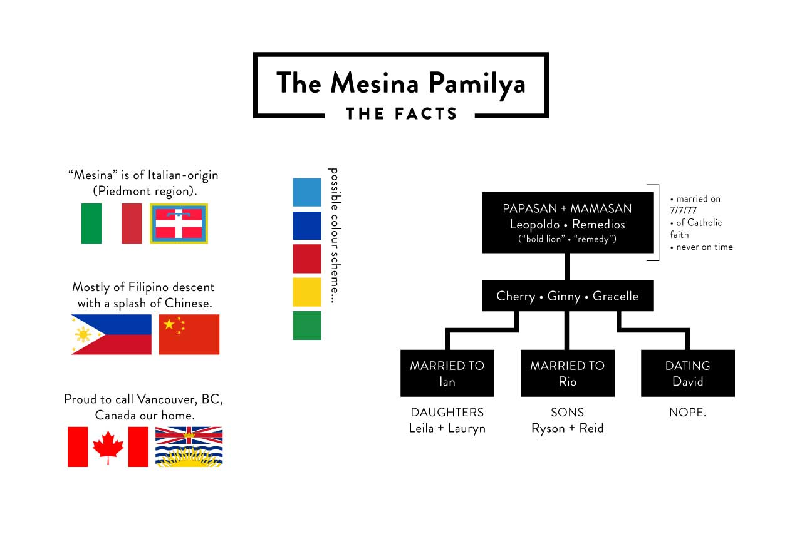
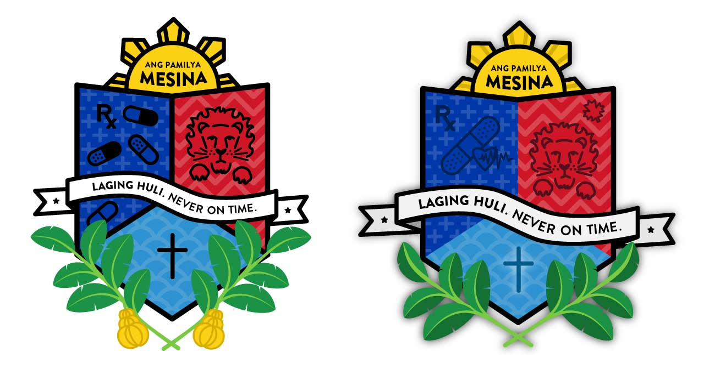

For Christmas 2014, I illustrated a calendar for a significant other. The images are based off of inside jokes and noteable dates, and the quirky/lame names of the months are "Tom Haverford-isms". This is a small compilation of selected illustrations.
I kept the artwork in an alternating pattern of monochromatic pinks and indigos, and printed the calendar on white cardstock, bound together by a prong fastener.
As a fan of Aaron Draplin's work and overall demeanour, I was stoked to see that he was teaching a Skillshare course about logo design. This is the humble result of his wonderous teachings.
Above is a visual summary of my family's geographical roots and immediate family tree. Mr. Draplin had asked us to look into any bits of ancestry and family meaning for inspiration. My current crest is based on my family's various ethnicities and the meanings of my parents' first names.
Above are explorations in form and colour. The top half (above the banner) represent my parents; my mom's name, Remedios means "remedy" and my father's name Leopoldo means "bold lion". The bottom half represents our deep-rooted faith. The five banana leaves represent each person of my immediate family.
In 2013, it was a big deal for me to get a Dribbble invite. So when a close friend of mine offered me an invitation, I was all over that, but I felt pressured to make an awesome first shot. So I decided to make an illustrative .gif about the type of person I am.
I illustrated my family in Brady Bunch-style for my parents' 36th wedding anniversary on July 7th, 2013. (That's right, they were married on 07/07/77.)